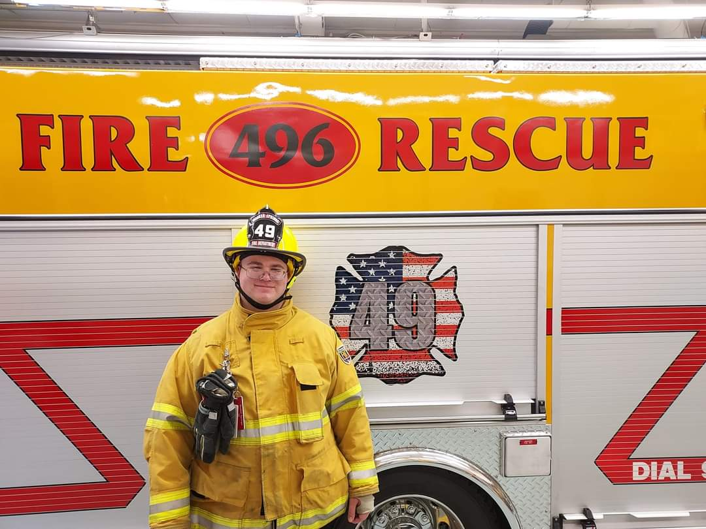

Quaker Springs Fire Department would like to thank John Hedbring and Tymetal Corp (a Fort Miller Group company) for their generous donation of refurbishing our barbeque pit grates. We will be able to host chicken barbeques well into the future with their excellent craftmanship. Thanks again.
Congratulations to our newest and youngest interior firefighter, James Jennings, III who is following a proud family tradition of service at QSFD. Thanks for all you do!
The Quaker Springs Fire Department has been proudly protecting life and property in the Town of Saratoga since 1947. We are a 100% volunteer organization and we are always looking for additional help. If you would like to join our men and women in providing this valuable service, please contact us at (518) 584-3349 or come to a drill at Station 1 any Thursday night.